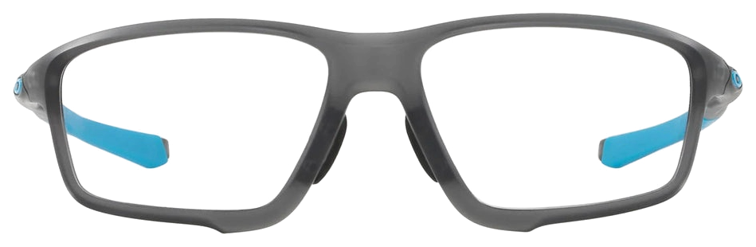
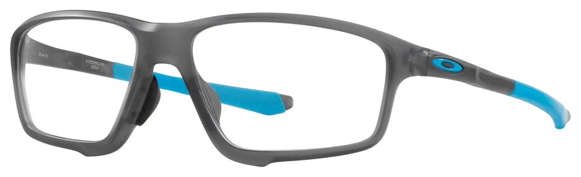

NEW IN STORE
OAKLEY
×
ZEISS
Crosslink Zero · Satin Gray Smoke
THE LENS
ZEISS SMARTLIFE
Screens to real world, all day
THE COATING
DURAVISION PLUS
BLUEPROTECT UV
Reduces blue-violet light 390–440 nm
OX8080 · Crosslink Zero
OAKLEY OX8080-0158